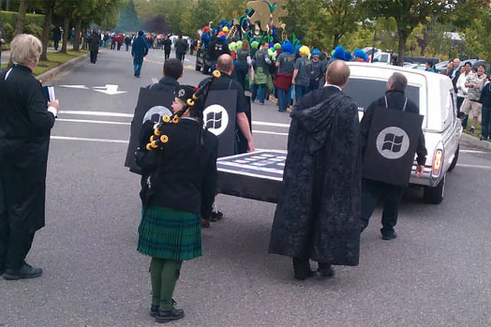

Lumia 520: My First Smartphone
This page was automatically recreated by AI from an article on the old website.
Microsoft’s Windows Phone operating system officially “retired” on January 14, 2020. This was also when the legendary Windows 7 faded into the past to make way for newer names. The Lumia lineup, crafted by Nokia and later Microsoft Mobile, was born specifically to run this platform. Among them, the Lumia 520 was not only the most popular model but also the first smartphone that opened up a fascinating digital world for me. After 10 years, since my old 520 is broken, I decided to find that old feeling again with the Lumia 640 XL to see what this “old-timer” can still do in 2026, an era flooded with AI.

The legendary Lumia 520, the gateway that led me into the world of technology
1. Overview
My first smartphone, the Nokia Lumia 520, always holds a critical place in my tech-tinkering journey. I still clearly remember the excitement of unboxing it under the afternoon sun, admiring the vibrant replaceable plastic back cover. Despite being a budget device, it felt very solid, compact, and extremely refined.
What impressed me the most was its pure simplicity. The Live Tiles interface on Windows Phone 8.1 looked very modern and intuitive at the time, not at all messy like the menus of the physical keypad phones I used before. Its performance back then was incredibly smooth, enough to meet all the exploration needs of a “newbie”.
Even though the camera was only 5 MP and looks quite “prehistoric” by today’s standards, it was a whole sky of technology back then. It helped me capture everyday moments in the easiest way possible.

Source: Internet
2. Specifications
A decade later, my memory as a Software Engineer has its limits, so I had to ask “friend” Google for a hint to compile this spec table for your reference.
Lumia 520 Configuration Details
| Specification | Details |
|---|---|
| Processor | Qualcomm Snapdragon S4 Plus MSM8227 (2 x 1 GHz) |
| Memory (RAM) | 1 GB |
| Storage | 8 GB SSD |
| Battery | 1430 mAh |
3. Lumia 640 XL: A Successor from the Past
When Windows Phone faded into history, I happened to read about the Windows 11 ARM project running on old devices, which immediately reminded me of the Lumias. Curious about the fate of a once-failed but potential-filled platform, I bought a Lumia 640 XL to test its survival capabilities.
Comparing the Lumia 640 XL to today’s borderless smartphones, the first feeling is an unusual sturdiness. The 5.7 inch screen, while not having a very high resolution, benefits from the IPS panel and ClearBlack technology, making colors very distinct, especially the deep blacks that make the Live Tiles pop.
Lumia 640 XL Configuration Details
| Specification | Details |
|---|---|
| Processor | Qualcomm Snapdragon 400 MSM8226/MSM8926 |
| Memory (RAM) | 1 GB |
| Storage | 8 GB SSD |
| Battery | 3000 mAh |
Photography with ZEISS Lens
What I expected most was the 13 MP camera with a ZEISS lens. In good lighting, the photos have a level of detail and dynamic range (DR) that quite surprised me. It carries a very distinct color signature, not overly processed by AI like today’s phone models.
4. “Surviving” with a Dead Operating System
The question is: What can a machine running Windows 10 Mobile do in 2026?
| App | Status in 2026 |
|---|---|
| Browser | Monument Browser still handles light news sites well. |
| Messaging | Unigram (Telegram client) is the only lifeline for communication. |
| Entertainment | Offline music via SD card remains the ultimate choice. |
The reality is that most popular apps like Facebook or YouTube have stopped working. However, thanks to the community of developers who are still passionate, we can use web wrappers or third-party apps to maintain the most basic features.
5. Crazy Project: Windows 11 ARM on Lumia
This is the most dramatic part. I couldn’t just let this machine sit quietly with its ancient OS. I experimented with installing the WOA (Windows on ARM) project on this 640 XL.
The feeling of seeing the Windows 11 Start button appear on a phone from 2015 is truly hard to describe. Although the machine runs extremely hot and lags due to hardware limits, it proves one thing: The limit of technology only lies in our imagination.
Conclusion
The journey from Lumia 520 to 640 XL isn’t just about swapping for a better phone, but it is how I keep a connection to memories from when I was just starting out in the Software Engineering industry.
While it cannot be used as a primary device, whenever I need a quiet space to focus or simply want to feel nostalgic about the “stone age” of smartphones, I pick up this Lumia. Windows Phone may be commercially dead, but its soul lives on in the community of true tech lovers.
790 Words
2024-11-29 23:35